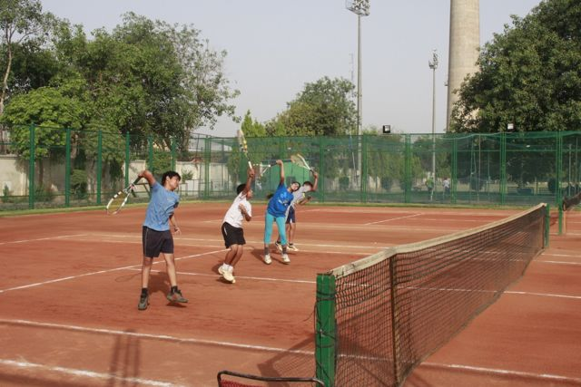

- 


ROGER DISHES ON DARTH VADER, HAIR & MORE
by ATP Staff24.05.2013
World No. 3 Roger Federer participated in his first AMA (“Ask Me Anything”) Q&A session on the social news site Reddit Friday evening in Paris under the moniker ‘iamrogerfederer’.
Here are some of the questions thrown at the Swiss superstar, who offered a mix of intelligent, helpful and witty answers.
dflove: Are you ever planning on bringing back Darth Federer? Fans love the all black night outfit.
iamrogerfederer: I really loved that outfit. Under the lights in NYC. All black. That was awesome. No plans yet to bring it back yet.. but we'll see.
Self_Esteem_Booster: What was your toughest match ever?
iamrogerfederer:
• Hewitt in Davis Cup 03.
• Del Potro in Olympics 2012.
• Roddick Wimbledon 09.
• Nalbandian 05 World Tour Finals, final.
• Rafa Wimbledon 2008. One of the great matches I've been apart of.
LogelFedelel: What are your thoughts on restructuring the tennis season to allow for a slightly longer grass court season and possibly having a Masters 1000 event before Wimbledon?
iamrogerfederer: Thanks LogelFedelel.
The Tour is adding a week of grass before Wimbledon starting in 2015. Who knows, maybe one day we'll have a Masters 1000. I clearly would love more tournaments on grass :)
Let's not forget 3 of the 4 grand slams used to be on grass.
EvilNeville: If you could play doubles with one player living or dead who would it be and why?
iamrogerfederer: My three choices would be John McEnroe, Stefan Edberg, and Rod Laver. From a historical perspective it would be really fun to play doubles with them as they are all legends.
Brendinio: Dear Roger, if there was one rule of tennis you could alter, what would it be?
iamrogerfederer: A rule that would only let ME serve from the service line. Whenever I want. Seems fair to me :)
On a serious note: we should get some more Best of 5 set finals back (like at the ATP World Tour finals).
basherrr: Did you really hit that can off that guy's head?
iamrogerfederer: It takes a lot of practice. Kids, I wouldn't try that at home ;)
Federer45: How do you keep your hair so perfect?
iamrogerfederer: I really don't. I fight it every day like everybody else. But thanks.
mungbeanie: Roger, you are one of my favourite tennis players, if not my absolute favourite! What kind of music does a man of your calibre listen to?
iamrogerfederer: It all started for me in Dance & Techno. Then i moved over to Rock. Now i'm all over the place.
atifinthenight: Hi Roger! My question is: at this point in your career, are there any records or achievements that you still really want?
iamrogerfederer: There are some great new CD's out that I haven't bought yet. But in terms of tennis records:
Any record is welcome. 8 Wimbledons would be great. I'd also love to win another ATP World Tour final. And getting back to World No. 1
christophethefish: What are the differences between Paul Annacone and Severin Luthi's coaching? Do they give you different kinds of advice/strategy or are they on the same wavelength?
iamrogerfederer: For me it's really important that they get along.. which is definitely the case.
We have a great chemistry and they complement each other. Paul has great experience on Tour as a player and coach, which is invaluable. And Severin has known me and my game for such a long. So the two together are a great combo.
AlfaAlfalfa: What is your reaction to this?
iamrogerfederer: For you baseball fans out there: Strike 1.